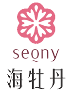
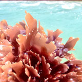
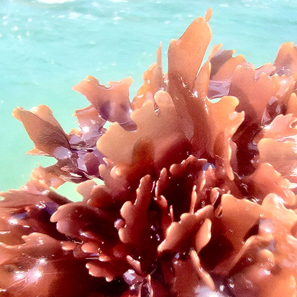

STORY品牌故事
品牌事紀

永續循環 創生藍色海洋經濟
由台灣中油股份有限公司綠能科技研究所於2023年創建「海牡丹seony」品牌， 以綠色製程為核心技術，落實海洋永續循環，低污染減少廢棄， 開發本土海洋資源之海藻萃取美妝原料。
永續循環 創生藍色海洋經濟
綠能科技研究所於2016年起，利用天然氣熱交換後所得到的低温潔淨冷排海水，於高雄永安天然氣廠進行陸上海藻養殖，目前已成功培育台灣本土海藻「海木耳」。

傍著天然氣周而復始的鑽石水
為便於運輸天然氣以-162°C進行液化，引入大量海水熱交換，交換後的海水終年保持18~25°C，如同寶藏般的水資源於高雄永安區供應了漁業養殖創造經濟產值，當地漁民盛讚為鑽石水。
台灣中油第一艘天然氣船進港
1980年代台灣經濟起飛，液化天然氣為當時14項重大建設之一，1984年於高雄永安興建全台第1座天然氣接收站，並於1990年正式啟用，從此與海洋共榮成為了最重要的任務。
品牌介紹
品牌設計概念
海木耳是一種藻類，於文獻之形容猶如盛開之牡丹花，也象徵海洋生命力與其高值化應用所帶來之價值，因此擬結合海洋與牡丹的意念，將商標名定為「海牡丹」，而英文名稱「seony」係來自海洋英文字詞sea+牡丹英文字詞peony，取用來自sea 之「s」同時也意涵海木耳sarcodia首字「s」，peony第二英文字母「e」則與sea第二字母重疊，象徵海洋與海牡丹結合，符合整體設計理念
品牌精神
海牡丹，海洋中的紅色精靈，蘊藏著馥郁能量，汲取陽光與自然的養分，帶來永續循環的恩賜，日日綻放耀眼光芒，充滿活力，初心 純粹 永不凋零。
研發優勢
我們最大的不同點是
擁有液化天然氣冷能交換的18℃潔淨海水「鑽石水」
秉持海洋資源永續循環理念邁向藍色經濟的新興產業

海木耳介紹
「海木耳(Sarcodia Suiae)」形似牡丹花的紅藻，在水中綻放如晚霞般嫣紅。
台灣特有種，原生於潮間帶，又名「厚葉紫菜」或「長壽菜」，可食用，富有豐富的蛋白質、纖維質、碘、鈣、鐵等人體必要的微量元素，以及多種氨基酸、維生素，營養價值極高。
透明化生產履歷
每批海藻均有詳實之履歷紀錄
並以食品級規格進行嚴格之安全性檢驗
首創專利
以中油鑽石水
進行海木耳陸上養殖
體現循環經濟
綠色萃取製程
提倡以無毒低廢棄之製程技術
提取專利萃取美妝應用原料
每批次產品均通過嚴格之安全性檢驗